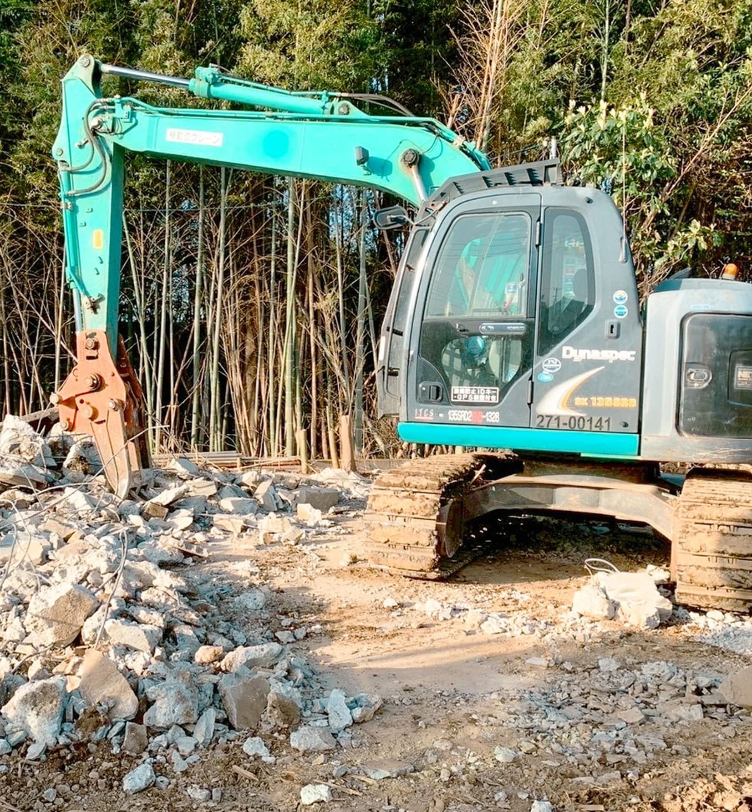

千葉 × 東京 解体工事
あなたの
あなたの
解体の相棒に。
株式会社バディクルは、船橋市を拠点に千葉・東京エリアで解体工事を手がけています。社名の「バディ」は相棒という意味。ただの解体ではなく、これから生まれる新しい風景を守る仕事として、お客様に寄り添い続けます。

01
「ただの解体」ではなく、
地域と人々に寄り添いながら、
未来の形を築いていく。
BUSINESS
幅広い解体工事に、
幅広い解体工事に、
一社で対応します
建物の解体から関連設備、内装解体まで。現地調査のうえで詳細なお見積りをご提示します。
木
木造住宅の解体
戸建て住宅の解体工事。近隣への配慮を行き届かせながら丁寧に進めます。
鉄
鉄骨造・RC造の解体
鉄骨造・RC造など、規模を問わず総合的な解体工事に対応しています。
内
内装解体工事
商業施設・オフィスビル等の内装解体（スケルトン工事）に対応します。
樹
樹木伐採・抜根工事
敷地内の樹木伐採・抜根もあわせてご相談いただけます。
見
現地調査・お見積り
現地調査のうえ、詳細なお見積りを提示。ご納得いただいてからの着工です。
相
ご相談・お問い合わせ
お電話・LINE・お問い合わせフォームから、迅速にご返信します。
STRENGTH
バディクルが
バディクルが
選ばれる理由
01高いレスポンス力
お問い合わせや見積もりのご提示に迅速に対応。「相棒」として、まず素早く応えることを大切にしています。
02毎日の進捗報告
工事中は毎日の進捗報告を実施。今どこまで進んでいるかが分かる安心感を提供します。
03現場清掃・近隣配慮
現場清掃を徹底し、近隣への配慮も行き届かせています。工事後も気持ちよく過ごせる環境づくりを。
04地域密着・千葉/東京対応
船橋市を拠点に、千葉県・東京都・埼玉県で解体工事業・産業廃棄物収集運搬業の登録・許可を取得しています。
FLOW
ご依頼の流れ
01
お問い合わせ
お電話・LINE・フォームよりご連絡ください。
02
現地調査
現地を確認し、工事内容をすり合わせます。
03
お見積り・ご契約
詳細なお見積りをご提示。ご納得後にご契約。
04
着工・進捗報告
丁寧に施工し、毎日の進捗をご報告します。
COMPANY
会社概要
| 社名 | 株式会社バディクル |
|---|---|
| 所在地 | 〒274-0067 千葉県船橋市大穴南1-37-6 |
| 連絡先 | 090-9238-6412（直通携帯） |
| 受付時間 | 8:00～19:00（祝日除く） |
| 事業内容 | 総合解体工事（木造／鉄骨造／RC造等） 内装解体工事（商業施設／オフィスビル等） 樹木伐採抜根工事 等 |
| 許可・登録 |
解体工事業登録：千葉県知事(登-6)第2803号／東京都知事(登-6)第5555号／埼玉県知事(登-6)第3597号 産業廃棄物収集運搬業：千葉県 第01200242909／東京都 第1300242909／埼玉県 第01100242909 |